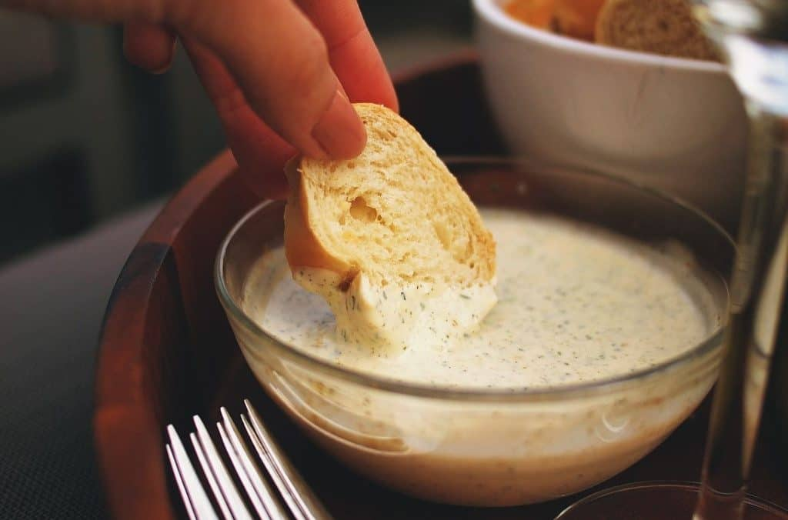

Salsa de Ajo
La Salsa de Ajo es una salsa popular en Colombia y simplemente hecha con una mezcla de mayonesa, ajo fresco, jugo de limón y cilantro. Esta salsa de ajo se puede servir con patacones, plátanitos, papas fritas, yuca frita, y como un complemento para la mazorca desgranada (un plato de maíz y queso), hamburguesas, perritos calientes y sándwiches.
Tiempo de Preparacion
Instrucciones
- comenzar la preparación de la salsa de ajo pelando unos 3 o 4 dientes de ajo, dependiendo de su tamaño y de lo fuerte que queramos la salsa. Cortamos la parte seca del tallo y, además, le quitamos el germen para que sea más digestivo. Para ello, cortamos cada diente de ajo por la mitad a lo largo y le retiramos el germen que tienen en el centro. Por último, los troceamos un poco.
- Luego seguimos con la receta cogiendo 300 g de mayonesa, ya bien sea preparada o recién hecha. La ponemos en el vaso de la batidora. Se puede utilizar tanto la batidora de vaso como la de mano.
- Echamos los ajos dentro del vaso junto con la mayonesa. Podemos ir echando solo una parte de los ajos para no pasarnos y rectificar en el paso siguiente.
- Ahora trituramos todo junto hasta que el ajo se haya integrado bien con la mayonesa. Esto puede tardar un par de minutos. Veremos además que, al batir, la mayonesa coge una consistencia más cremosa. Probamos y, si lo consideramos necesario, añadimos más ajo, teniendo en cuenta que al reposar el sabor será más pronunciado.
- Una vez bien integrado, vamos a condimentar nuestra salsa con cilantro fresco o, en su defecto, perejil. Primero lo enjuagamos y secamos muy bien. Después, retiramos los tallos y agregamos solo las hojas a la mayonesa con ajo.
- De nuevo, le damos un golpe de batidora, poco, lo suficiente para que el cilantro quede bien picado y que veamos que la salsa coge un ligero color verde y con trocitos de cilantro aún visibles. Igualmente, rectificamos en este punto la cantidad de cilantro.
- Por último, probamos la salsa y, de manera opcional, condimentamos al gusto con un poco de aceite de oliva, unas gotas de zumo de limón, sal (poca) y pimienta. Aunque se puede consumir directamente, te recomendamos dejar que repose al menos 1 hora en la nevera para que se integren bien los sabores.